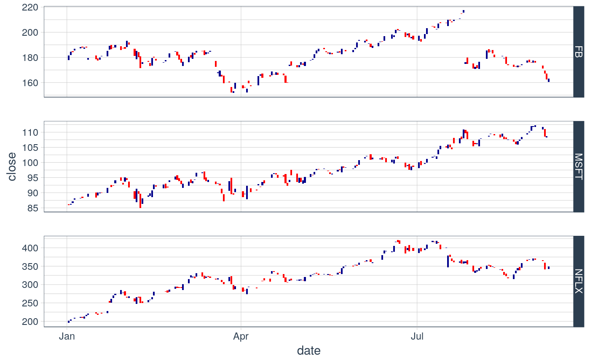

instrumentListToTidyquant.RdBasically this function reduces a list of instruments to a single long format tibble in order to create a more easy to work with format and fascilitate saving as csv etc.
instrumentListToTidyquant(x)
| x | the list of instruments, which currently all must be of class xts, to reduce |
|---|
a long format tidyquant tibble
#>#> #>#> #> #>#>#> #>#> #> #>#>#>#> ✔ ggplot2 3.1.0 ✔ readr 1.3.1 #> ✔ tibble 2.0.1 ✔ purrr 0.3.1 #> ✔ tidyr 0.8.3 ✔ stringr 1.4.0 #> ✔ ggplot2 3.1.0 ✔ forcats 0.4.0#> Conflicts ────────────────────────────────────────── tidyverse_conflicts() ── #> ✖ lubridate::as.difftime() masks base::as.difftime() #> ✖ lubridate::date() masks base::date() #> ✖ dplyr::filter() masks stats::filter() #> ✖ dplyr::first() masks xts::first() #> ✖ lubridate::intersect() masks base::intersect() #> ✖ purrr::is_null() masks testthat::is_null() #> ✖ dplyr::lag() masks stats::lag() #> ✖ dplyr::last() masks xts::last() #> ✖ testthat::matches() masks dplyr::matches() #> ✖ lubridate::setdiff() masks base::setdiff() #> ✖ lubridate::union() masks base::union()mypath <- system.file('extdata', package = 'datrader') mylist <- loadExistingInstruments(mypath) tqdf <- instrumentListToTidyquant(mylist)#>#>mutate(tqdf, date=as.Date(date)) %>% filter(date >= "2018-01-01") %>% ggplot(aes(x = date, y = close, group = symbol)) + geom_candlestick(aes(open = open, high = high, low = low, close = close)) + theme_tq() + facet_grid(symbol~., scale="free_y")#> Warning: Ignoring unknown parameters: colour_up, colour_down#> Warning: Ignoring unknown parameters: colour_up, colour_down#> Warning: Computation failed in `stat_linerange_bc()`: #> Evaluation error: argument "color_up" is missing, with no default.#> Warning: Computation failed in `stat_linerange_bc()`: #> Evaluation error: argument "color_up" is missing, with no default.#> Warning: Computation failed in `stat_linerange_bc()`: #> Evaluation error: argument "color_up" is missing, with no default.